Modifying path segments
You can modify path segments by:
Moving path segments
You can use the Move Segment command to move a path segment along the plane to which it is attached. With the command, you simply select the segment you want to move, and then drag it to a new position, then release the mouse button. This command maintains any existing relationships on the path segment and any of the adjacent tube segments.
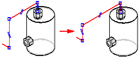
Suppose you place a dimension on a segment and later decide you want to change the dimension value. All you have to do is select the dimension you want to change, and type the new value in the Dimension Value on the XpresRoute command bar.
Splitting path segments
Use the Split Path command to split a path segment into two separate segments. With the command, you select the segment at the point you want to split.
In XpresRoute and Frame, a connect relationship is applied to the split point of the new segments.
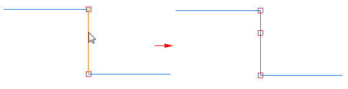
In Harness Design, the command creates a BlueDot at the connect point.
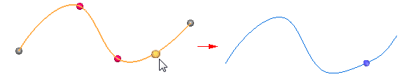
When you split a path that is not consumed by a wire, cable, or bundle, an entry for the new path is added to PathFinder. When you split a path that is consumed by a wire, cable, or bundle, no entry is added to PathFinder.
Once created, you can drag the BlueDot to edit the path.
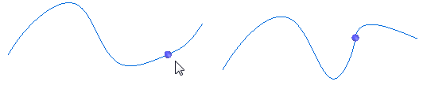
You can split a path at an edit point along the path. If the edit point is constrained to geometry, the split point remains associative to the geometry, but no BlueDot is created. Also, when you split the path at an edit point constrained to geometry, both paths have tangency handles at the split point. The existing path remains tangent to the geometry and the new path is tangent to the existing path.
If the edit point is not constrained to geometry, a BlueDot is created.
Relationships and split segments
When you use the Split Path command, the relationships on the split segment are maintained on the new segment. In addition, a connect relationship is applied to the split point of the new segments. The following cases describe how the Split Path command works with relationships.
-
Segment coaxial relationship with a port
When you split a segment that is coaxially aligned with a port, the new segment attached to the port retains the coaxial relationship. The segment that is not directly attached to the port has no additional relationships other than the connect relationships.
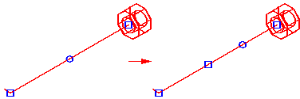
-
Segment with an axis dimension
When you split a segment containing an axis dimension relationship, the original axis dimension is maintained between the endpoints of the segment.
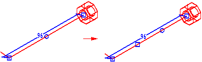
-
Segment with a planar relationship
When you split a segment containing a planar relationship, both new segments retain the planar relationship.
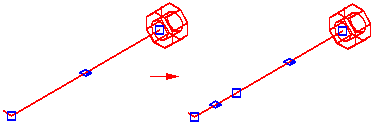
-
Segment with a parallel relationship
When you split a segment containing a parallel relationship, the new segment maintains the parallel relationship.
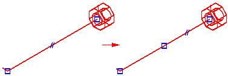
Creating curve segments
You can use the Curve Segment command to create a 3D curve based on a set of endpoint-connected path segments. The curve is always tangent to the first and last segments in the select set and it passes through the first and last points of the path. There is an option on the Curve Segment command bar that allows you to define the points for the curve. You can specify that the curve passes through the
-
midpoints of the line segments,
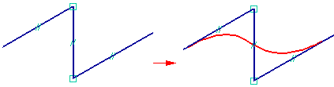
-
the endpoints of the line segments,
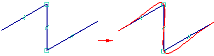
-
or all points of the input segments.
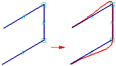
You can use the Hide Input Path and Show Input Path commands on the shortcut menu to control the display on the path used to create the curve segment.